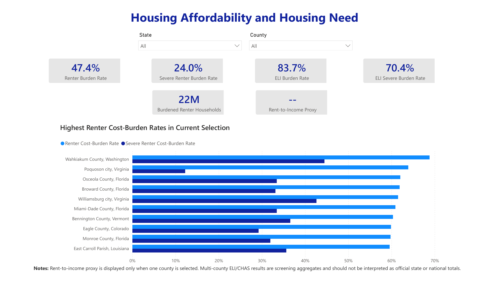
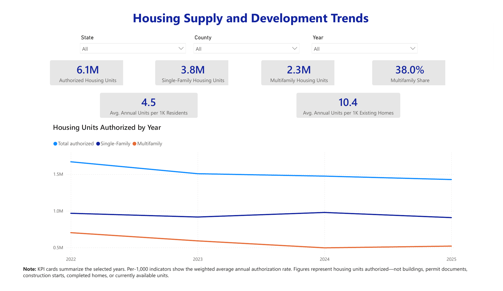
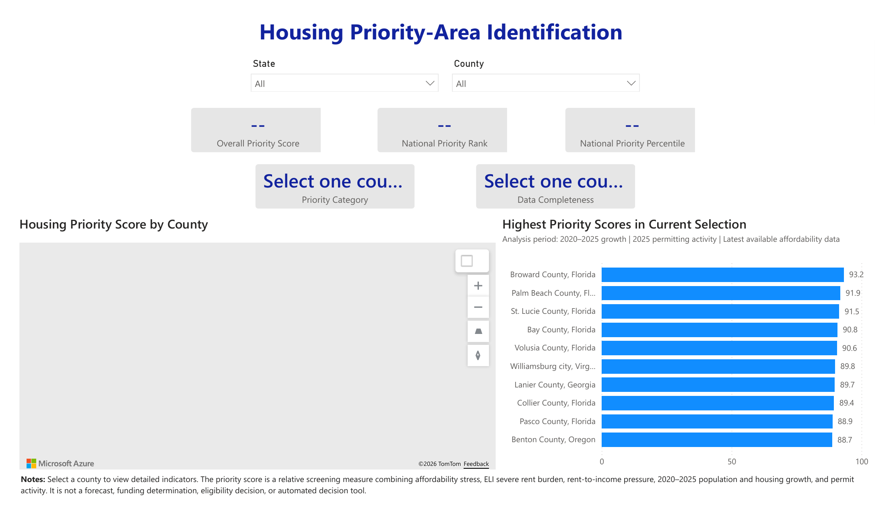
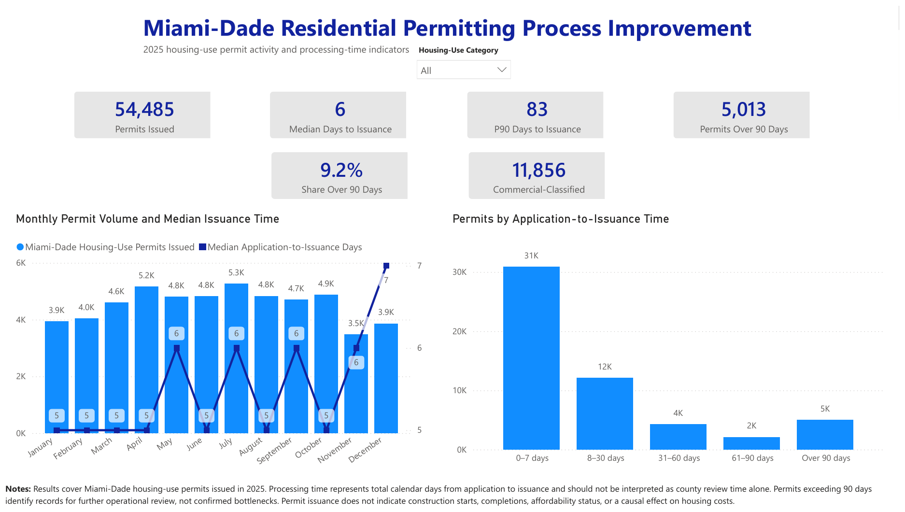

What the toolkit provides
Public overview and case study
Explains AHIP, national relevance, the replication framework, and the Miami-Dade permitting proof of concept.
PDF DOCXHousing analytics reference
Summarizes official public data sources, core KPI definitions, data-quality controls, and local adaptation checks.
PDF DOCXResponsible use and public access
Defines human-review controls, permitted uses, information boundaries, versioning, and release readiness.
PDF DOCXDashboard scope
AHIP includes three nationwide decision-support dashboards covering housing affordability and need, housing supply and development trends, and priority-area identification. These dashboards use national public datasets and support state and county filtering where the underlying data are available. A fourth dashboard presents a 2025 Miami-Dade County residential permitting pilot. The Miami-Dade pilot demonstrates how the AHIP framework can be adapted for local operational analysis and is not the geographic limit of AHIP.
Nationwide decision-support dashboards
Housing Affordability and Housing Need
Supports national, state, and county review of renter cost burden, severe burden, extremely low-income renter need, and related screening indicators.
{kind=link}

Housing Supply and Development Trends
Supports national, state, county, and year-based review of authorized housing units, single-family and multifamily activity, and normalized authorization rates.
{kind=link}

Housing Priority-Area Identification
Provides a transparent screening view to identify counties that may warrant deeper professional review. The score is not a funding, eligibility, zoning, or automated policy decision.
{kind=link}

Miami-Dade Residential Permitting Process Improvement
This 2025 local proof of concept presents housing-use permit volume and application-to-issuance time indicators. Long-duration records identify items for further operational review, not confirmed agency bottlenecks.

National framework, local proof of concept
AHIP is designed as a national housing decision-support framework. The Miami-Dade County permitting pilot is the first local operational proof of concept. Its reusable value is the controlled method: define the business question, validate local data, map terminology and workflow, approve KPIs, test quality, review results with subject-matter experts, and publish with clear limitations.